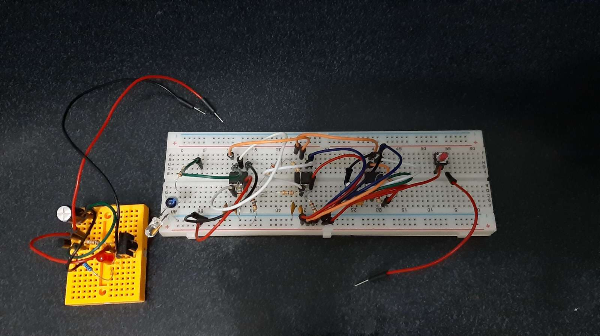
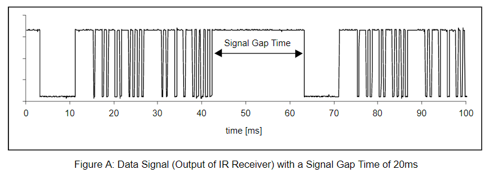
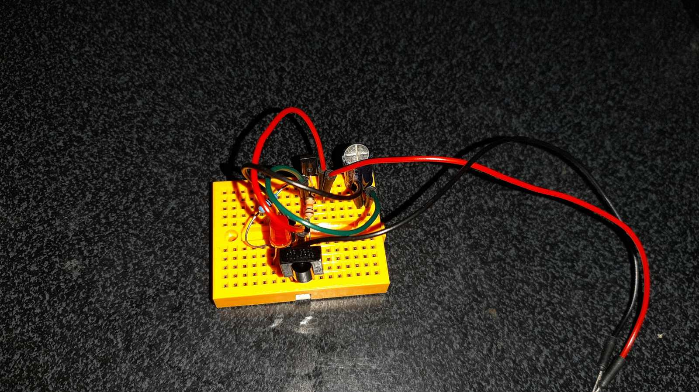

Development of a transmitter and a receiver that communicate via optical signals. The transmitter is equipped with a pushbutton, while the receiver features an LED indicator. The LED remains illuminated as long as the transmitter button is held down. The system is required to operate reliably at a distance of at least 3 meters between the two devices under various ambient light conditions.

For the receiver, I used a TSOP34838 sensor. This sensor is used in most devices that have a remote control (TV, DVD player, etc.). For the transmitter, I used an LED that emits light in the infrared spectrum.
The TSOP sensor operates according to a communication protocol. The infrared signal must be modulated with a carrier frequency of 38kHz. The signal must consist of at least 6 light pulses. In each series of up to 9 pulses, a pause equal to the pulse period is required. The signal must not be transmitted continuously; every 90ms, a pause of at least 15ms is necessary.

For signal generation, I used 3 555 timers. The first timer generates a signal with a frequency of 10Hz, with its output connected to the reset pin of the second timer. The second timer generates a signal with a frequency of 2.4KHz, with its output connected to the reset pin of the third timer. The third timer generates a signal with a frequency of 38kHZ, with its output connected to the two infrared LEDs.


The TSOP sensor requires a stable power supply. Due to its internal logic, the sensor features an active-low output: it outputs a HIGH voltage state in the absence of IR waves and drops to a LOW voltage state when a valid 38 kHz IR signal is detected. To invert this logic and drive the indicator correctly, a PNP transistor was implemented.

Additionally, because the demodulated output of the TSOP still contains subtle transitions between burst packets, a smoothing capacitor was added to act as a low-pass filter, preventing the LED from flickering and ensuring a steady illumination.
